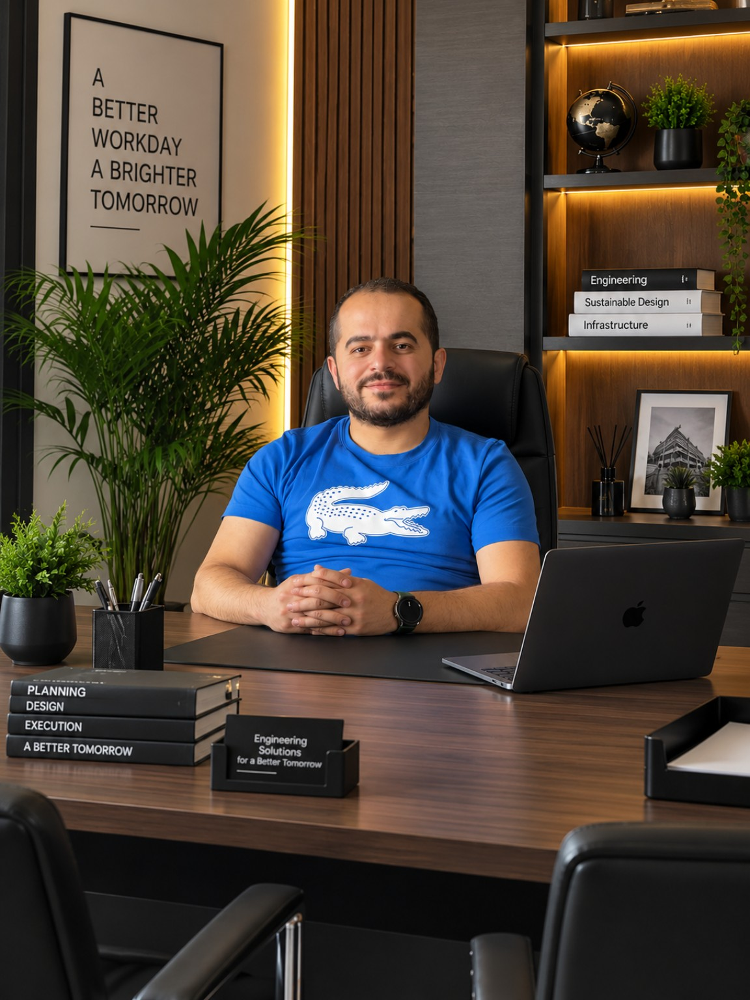

Working where it matters
Engineering
human
progress.
I’m Mohamad ElGandour. I connect technical design, field delivery and people’s needs to build more resilient water systems and essential infrastructure.

No infrastructure
works in isolation.
Water, energy, essential services and communities depend on one another. Select a system to explore how I work across their connections.
Different sites.
A shared purpose.
Select a node to explore each project’s technical scope. Switch to deliverables to inspect the work package, or open the full case study for context and delivery lessons.
Built on experience.
Shaped by the field.
Select an organization to explore my role, responsibilities and the expertise developed along the way.
A clear process.
From need
to handover.
Every assignment has its own constraints. A structured process keeps decisions, quality and responsibility visible.
Technical rigour.
Human perspective.
I’m a civil engineer based in North Lebanon, working at the intersection of infrastructure and humanitarian programmes. My experience spans site assessment, technical design, procurement support, construction supervision and project management.
I value engineering that can be understood, implemented and maintained. That means clear scopes, realistic sequencing, accountable technical decisions and close coordination with the people responsible for the work.
From a school’s water facilities to a hospital rehabilitation package or a pumping-station upgrade, the objective is to make essential infrastructure work better for the people who depend on it.
Continue the conversation on LinkedIn ↗Let’s turn needs
into progress.
For engineering consultancies, WASH programmes, infrastructure assessments or rehabilitation assignments.
mohammad.gandour@live.comNorth Lebanon · Lebanon